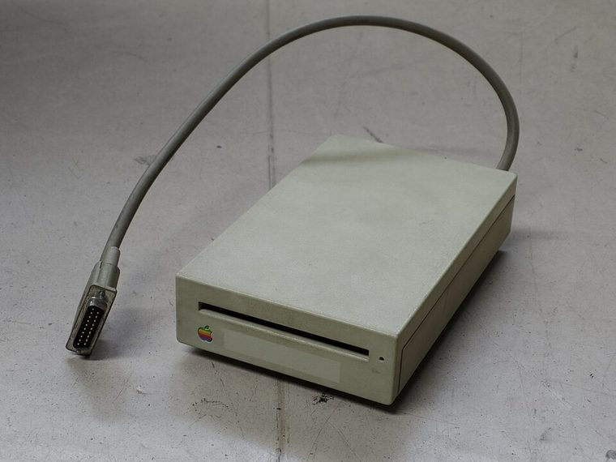
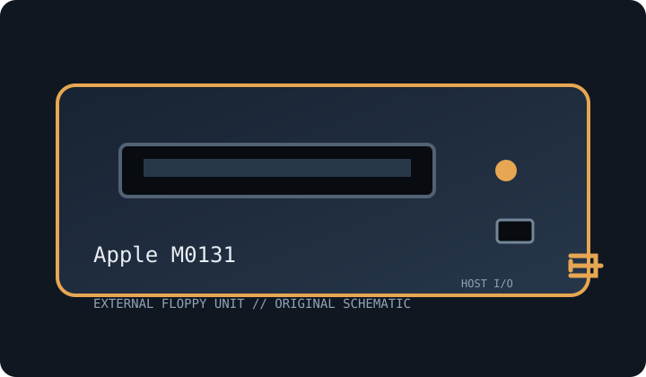

[ FLOPPY DRIVES // IDENTIFIED EXTERNAL MODEL ]
Apple Macintosh External Disk Drive (M0131)
Model-specific archive record. Enclosure labels do not always identify the installed mechanism or host controller; preserve the full suffix and inspect the unit before connection or service.


MODEL IDENTIFICATION: Apple M0131. Photograph the nameplate, serial, connector and power rating. Verify revision-specific instructions and inspect any replacement mechanism before use.
Recorded specifications
| Exact model | Apple M0131 |
|---|---|
| Drive size / type | 3.5-inch external floppy drive. |
| Capacity / formats | 800 KB double-sided Macintosh GCR format; not PC 720 KB MFM media. |
| Interface / controller | Apple Macintosh external floppy connector (proprietary 19-pin drive interface) and compatible Macintosh disk controller. |
| Power | Provided by compatible Apple host through the external connection in supported configurations; check cable and host specifications. |
| Host OS / system compatibility | Macintosh systems with 800 KB external-drive support, including supported Plus/SE-era configurations; not a generic PC or USB drive. |
| Cable / connectors | Apple DB-19 external-drive cable; preserve original cable and connector orientation. No standard PC 34-pin ribbon. |
Compatibility and preservation caveats
M0131 800 KB GCR differs from 400 KB Macintosh and PC formats. Host ROM/controller sets supported drive type; document replacement mechanisms.
Inspect for corrosion, contamination, cracked plastics, damaged shutter, cable strain and prior repairs. Do not insert damaged media. Record host, OS, controller/driver, drive label, revision, media condition and acquisition settings. Preserve original images and document conversions separately.
Manufacturer manuals & archive references
- Macintosh Plus Owner’s Guide — Internet ArchivePeriod Apple host documentation for Macintosh floppy use.
- Macintosh 128K (1984) documentation collection — Internet ArchiveEarlier system reference; do not infer 800 KB support from this source.
Sources are described by scope; a support portal or related-family manual does not establish every model-specific rating. Prefer a complete matching manual and unit label over family-level assumptions.